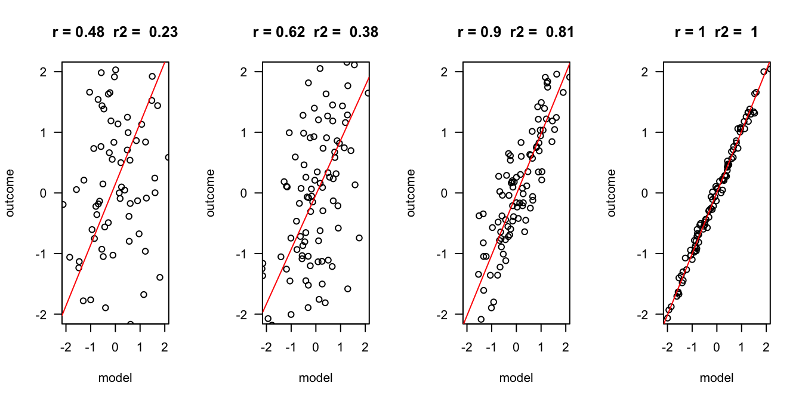

error = c(2, 1, .5, .1)
n = 100
layout(matrix(1:4,1,4))
for(e in error) {
x = rnorm(n)
y = x + rnorm(n, 0 , e)
r = round(cor(x,y), 2)
r.2 = round(r^2, 2)
plot(x,y, las = 1, ylab = "outcome", xlab = "model", main = paste("r =", r," r2 = ", r.2), ylim=c(-2,2), xlim=c(-2,2))
fit <- lm(y ~ x)
abline(fit, col = "red")
}